РАЗДЕЛ 5
ДОРОЖНОЕ ИСПЫТАНИЕ
1. РЕМНИ БЕЗОПАСНОСТИ
Проверить исправность ремней безопасности
- Пристегнуть ремни безопасности на передних сиденьях, а затем открыть замки.
- Пристегнуть ремни безопасности на задних сиденьях, а затем открыть замки (при наличии).
- Спокойно вытянуть натяжитель ремня безопасности, провести его через туловище и вставить металлическую пряжку "1" в замок "2".
- Регулировка высоты ремня безопасности
- Вытянуть ремень, нажать на центральную часть механизма регулировки и выставить высоту. Чрезмерно высокое положение может отрицательно сказываться на комфортности ремня.
- Звуковое предупреждение о непристёгнутом ремне (опция)
- Предупреждение раздаётся в течение 4 - 8 секунд, если при нахождении замка зажигания в положении "ON" ремень безопасности водителя не пристёгнут должным образом.
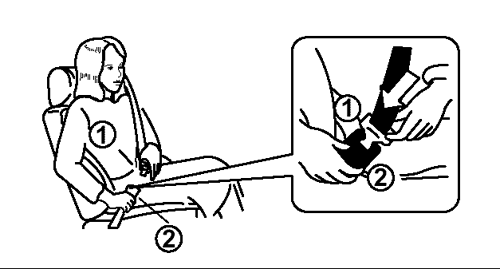


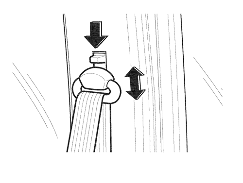
2. СВОБОДНЫЙ ХОД ТОРМОЗА И СЦЕПЛЕНИЯ
Проверить свободный ход педали тормоза и сцепления.
- Педаль тормоза
- После нескольких нажатий педали тормоза при выключенном двигателе, чтобы удалить вакуум в тормозной системе, следует легко нажать педаль рукой и измерить расстояние, которое она проходит до момента сопротивления.
|
Свободный ход педали тормоза
|
1~8 мм
|
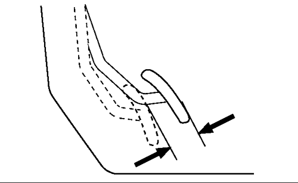
- Педаль сцепления
- Слегка нажать педаль рукой до ощущения сопротивления и измерить расстояние.
|
Свободный ход педали сцепления
|
6~12 мм
|
- Если свободный ход не отвечает требованиям, следует проверить и отрегулировать систему или рычажный механизм.
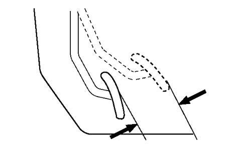
3. ЗВУКОВОЙ СИГНАЛ
Проверить исправность звукового сигнала.
- Звуковой сигнал раздаётся при нажатии на кнопку сигнала.
- Если для включения сигнала приходится нажимать кнопку с большим усилием, следует проверить исправность сигнала.
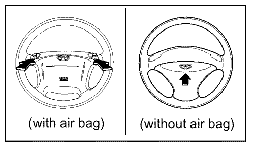
4. ШУМ ВОЗДУШНОГО ПОТОКА
Проверить шум воздушного потока при езде на высокой скорости.
5. ВСПОМОГАТЕЛЬНОЕ И ДОПОЛНИТЕЛЬНОЕ ОБОРУДОВАНИЕ
Проверить исправность и работу следующих узлов на основании скрипов и дребезжания.
- Автоматическая коробка передач
- Люк в крыше с электроприводом
- Система рулевого управления с гидроусилителем
- Антиблокировочная система тормозов
- Электростеклоподъёмники
- Регулируемое рулевое колеса
- Рычаг открытия крышки заливного отверстия
- Система дистанционного управления замками
6. ОБОГРЕВАТЕЛЬ И КОНДИЦИОНИРОВАНИЕ ВОЗДУХА
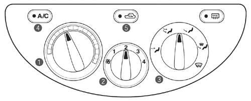
- Кнопка контроля температуры
- Кнопка контроля вентилятора
- Кнопка режима распределения воздуха
- Кнопка кондиционирования воздуха
- Кнопка рециркуляции воздуха
ПАНЕЛЬ УПРАВЛЕНИЯ
(КОНДИЦИОНЕР С АВТОМАТИЧЕСКОЙ РЕГУЛИРОВКОЙ ТЕМПЕРАТУРЫ ВОЗДУХА)
- Кнопка контроля температуры
- Вверх: каждым нажатием температура увеличивается на 0,5°С (1°F)
- Вниз: каждым нажатием температура уменьшается на 0,5°С (1°F)
- Заданная температура
- Индикатор размораживания
- Индикатор режима рециркуляции воздуха
- Индикатор режима распределения воздуха
- Индикатор кондиционирования воздуха
- Индикатор скорости вентилятора
- Кнопка управления скоростью вентилятора
- Кнопка размораживания
- Индикатор работы вентилятора
- Кнопка в(ы)ключения кондиционирования воздуха
- Кнопка переключения режима рециркуляции воздуха
- Индикатор режима подачи наружного воздуха
- Кнопка переключения режима распределения воздуха
- Кнопка выключения
- Кнопка автоматического режима работы
- Датчик температуры
- Индикатор включения автоматического режима
Проверить работу обогревателя и системы кондиционирования воздуха. (Проверить органы управления и убедиться в исправности системы.)
- 1) Запустить двигатель и дождаться его полного разогрева (минут 10-15).
- 2) Установить переключатель температуры в положение обогрева (красная зона).
- 3) Установить переключатель вентилятора в положение необходимой скорости (имеется 4 скорости).
- 4) Выставить режим распределения воздуха, проверить работу системы распределения.
- 1) Перевести рычаг системы кондиционирования воздуха в положение "OFF" и включить режим подачи свежего воздуха (fresh air mode).
- 2) Наружный воздух должен поступать через центральный и боковые вентиляторы.
- Кондиционирование воздуха (опция)
- Проверить работу системы кондиционирования, проверив исправность переключателя управления температурой, переключателя управления вентилятором, переключателем режима распределения воздуха и переключателя режима рециркуляции воздуха при положении "ON" выключателя системы кондиционирования.
- Работа обогревателя и кондиционера
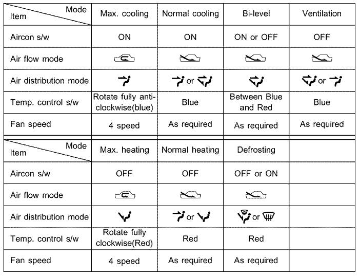
7. ФУНКЦИОНИРОВАНИЕ СТЕКЛООЧИСТИТЕЛЯ И ОМЫВАТЕЛЯ ВЕТРОВОГО СТЕКЛА, СХЕМА ДВИЖЕНИЯ, СКОРОСТЬ И ИСХОДНОЕ ПОЛОЖЕНИЕ (ПРИ НЕОБХОДИМОСТИ ВКЛЮЧАЕТ В СЕБЯ РЕГУЛИРОВКУ ПОЛОЖЕНИЯ ОМЫВАТЕЛЯ)
Проверить исправность омывателя и очистителя ветрового стекла, при необходимости отрегулировать направление форсунки омывателя. См. "17. ФУНКЦИОНИРОВАНИЕ СТЕКЛООЧИСТИТЕЛЕЙ И ОМЫВАТЕЛЕЙ" в разделе 3.
- Стеклоочиститель ветрового стекла
- При положении "ON" ключа постепенно поворачивать регулятор стеклоочистителя вперёд.
Примечание: Запрещается включать стеклоочиститель при сухом ветровом стекле.
- Омыватель
- - Для нанесения жидкости омывателя на стекло следует при включенном зажигании потянуть рычаг в сторону от приборной панели.
- - При удерживании рычага в таком положении менее 0,6 секунды жидкость будет нанесена на стекло без включения очистителей.
- - Потянуть рычаг к рулевому колесу и удерживать его в таком положении более 0,6 секунды - на лобовое стекло распрыскается омывающая жидкость, и несколько раз выполнится ход стеклоочистителей.
- - После отпускания рычага очистители автоматически возвращаются в исходное положение.

- Регулировка направления форсунок омывателя
- - Вставить прямой стержень в отверстие форсунки и, поворачивая её, выставить необходимое положение форсунки.
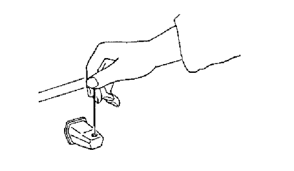
8. РАБОЧИЕ ХАРАКТЕРИСТИКИ ДВИГАТЕЛЯ И КОРОБКИ ПЕРЕДАЧ В РЕЖИМЕ УСКОРЕНИЯ, ЗАМЕДЛЕНИЯ, ХОЛОСТОГО ХОДА, РАВНОМЕРНОГО ДВИЖЕНИЯ И ТОРМОЖЕНИЯ ДВИГАТЕЛЕМ
- Проверить работу двигателя на холостом ходе при неполном раскрытии дроссельной заслонки.
- 1) Холостой ход
- - Обратить внимание на скорость работы полностью разогретого двигателя.
|
Холостой ход, мин-1
|
800 ± 100
|
- 2) При частично открытой дроссельной заслонке
- - Двигатель должен работать ровно без перебоев.
- - Скорость должна постоянно оставаться на уровне 40-50 км/ч.
- Проверить работу двигателя при нагрузке и равномерной езде.
- 1) При нагрузке
- - Автомобиль должен ускоряться плавно без затруднений и перебоев.
- 2) При равномерной езде
- - Ход автомобиля должен быть плавным без перебоев и рывков.
- Проверить работу коробки передач
- - При увеличении скорости движения автомобиля переключение скоростей должно происходить плавно.
- - Работа коробки передач должна протекать ровно, без посторонних шумов и вибрации.
- Проверить уровень вибрации и шума коробки передач и сопряжённых механизмов.
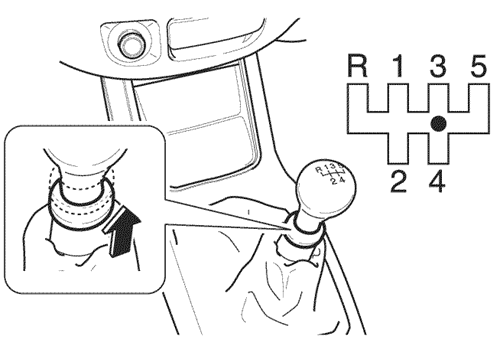
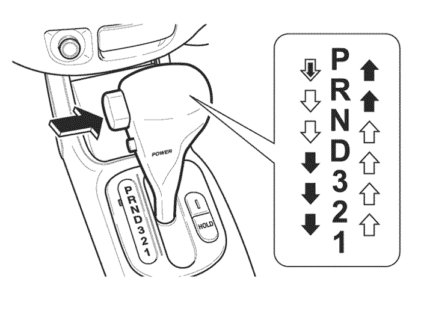
- Проверить функционирование блокировки оси тормоза и главной передачи BTSI (для автоматической коробки передач)
- - BTSI предотвращает внезапный пуск двигателя.
- - При пуске двигателя
- : после нажатия педали тормоза можно переключать передачи.
- - Без пуска двигателя
- : повернуть ключ зажигания в положение "ON" и нажать педаль тормоза - теперь можно переключать передачу.
- : вставить ключ в выключатель BTSI рядом с рычагом переключения передач.
9. СКРИПЫ И ДРЕБЕЗЖАНИЕ
Проверить автомобиль на наличие скрипов и дребезжания.
- Движение автомобиля не должно сопровождаться какими-либо посторонними скрипами и дребезжанием шасси или кузова.
- При необходимости следует затянуть ослабшие гайки, болты или смазать необходимые места.
10. ЗАМОК ЗАЖИГАНИЯ НА РУЛЕВОЙ КОЛОНКЕ
Вынуть ключ зажигания из замка и, поворачивая рулевое колесо, проверить, заперта ли рулевая колонка.
11. ПРИБОРЫ И УКАЗАТЕЛИ
Проверить индикаторы и указатели на приборной панели.
- Спидометр
- Тахометр
- Датчик уровня топлива
- Датчик температуры
- Контрольная лампа указателя поворота / аварийной световой сигнализации
- Индикатор передних противотуманных ламп
- Индикатор питания
- Индикатор режима фиксации
- Индикатор дальнего света
- Переключатель счётчика пройденного пути
- Контрольная лампа температуры охлаждающей жидкости
- Контрольная лампа подушки безопасности
- Контрольная лампа давления масла в двигателе
- Контрольная лампа зарядки аккумулятора
- Контрольная лампа тормозной системы
- Счётчик пройденного пути
- Индикатор положения рычага переключения передач
- Контрольная лампа недостаточного уровня топлива
- Контрольная лампа ABS
- Индикатор неисправностей
- Контрольная лампа открытия дверей
- Индикатор задних противотуманных ламп
- Предупреждение о непристегнутых ремнях безопасности
12. ЛЕГКОСТЬ УПРАВЛЕНИЯ ДРОССЕЛЬНОЙ ЗАСЛОНКОЙ
Проверить поведение автомобиля при увеличении или уменьшении давления на педаль акселератора.
- - Скорость автомобиля должна изменяться соответственно силе нажатия на педаль акселератора.
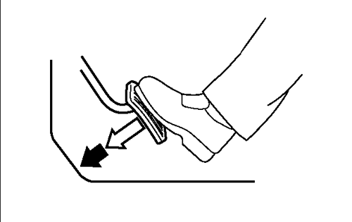
13. РУЛЕВОЕ УПРАВЛЕНИЕ (УСТАНОВКА КОЛЕСА В СРЕДНЕЕ ПОЛОЖЕНИЕ И ОБРАЩЕНИЕ С НИМ)
Проверка центровки рулевого колеса
- - Центрирование рулевого колеса необходимо выполнять при движении автомобиля по прямой на ровной поверхности.
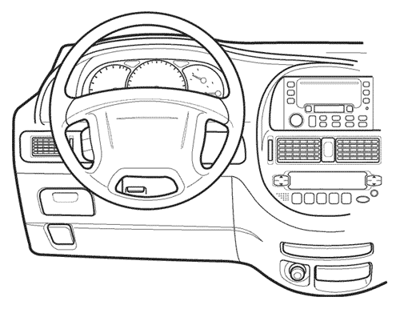
14. ТОРМОЗА (ВКЛЮЧАЮТ В СЕБЯ СТОЯНОЧНЫЙ ТОРМОЗ И КОНТРОЛЬНУЮ ЛАМПУ)
Проверка исправности тормозов
- Тестирование тормозной системы
- - Действие системы тормозов необходимо проверять на сухой, чистой, умеренно гладкой и ровной дороге.
- - Нажать педаль тормоза и проверить эффективность торможения. Постепенное опускание педали при постоянном нажатии свидетельствует об утечке в тормозной системе. В этом случае после остановки автомобиля необходимо выполнить осмотр.
- - Если система ABS адоптирована, следует проверить работу индикатора системы.
- * При обнаружении электронным блоком управления тормозов неисправности в системе ABS индикатор начнёт мигать, оповещая водителя о неисправности.
- Работа стояночного тормоза
- - Проверить ход стояночного тормоза, посчитав количество щелчков при включении.
- * Допустимое количество
- 6~9 щелчков при нажатии с силой около 20 кгс/м.
- - Автомобиль должен становиться на прямой линии.
- - Остановить автомобиль на наклонной поверхности и включить стояночный тормоз. Автомобиль должен оставаться на месте.
Проверка контрольной лампы тормозной системы
- - Контрольная лампа загорается после включения стояночного тормоза при включенном зажигании, и гаснет при выключении стояночного тормоза. Горящая лампа при выключенном стояночном тормозе свидетельствует о недостаточном уровне тормозной жидкости.
- - Контрольная лампа ABS загорается при включении зажигания и примерно через 3 секунды гаснет. Одновременное свечение контрольной лампы системы тормозов и контрольной лампы ABS во время езды свидетельствует о неисправности в тормозной системе.